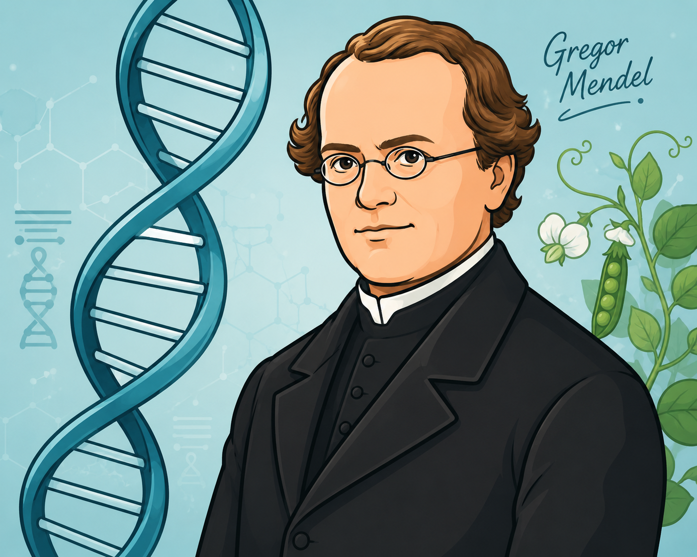

Gregor Mendel
O PAI DA GENÉTICA CLÁSSICAAntes de mergulharmos no sequenciamento de DNA e biologia molecular, precisamos entender as fundações. No século XIX, o monge austríaco Gregor Mendel utilizou matemática e cruzamento de ervilhas para provar que a herança genética não é uma "mistura de tintas", mas sim um sistema de informações discretas.
Dicionário Molecular Base
- Fatores Mendelianos: O que Mendel chamava de fatores, hoje conhecemos como Genes (trechos de DNA).
- Locus Gênico: O endereço físico exato de um gene dentro de um cromossomo.
- Alelos: São as "versões" de um gene (Ex: O gene determina a cor do olho; o alelo diz se a cor será azul ou castanha).
🧩 A 1ª Lei: Princípio da Segregação
Cada característica de um indivíduo é determinada por dois alelos. Durante a meiose (formação de espermatozoides e óvulos), esses alelos se separam. Logo, um gameta carrega apenas um alelo de cada par. A fertilização restaura a dupla em um novo indivíduo.
O Clássico: Cruzamento Monohíbrido
Após desvendar a herança de uma única característica, Mendel elevou a complexidade. Ele cruzou ervilhas avaliando dois genes simultaneamente: Cor (Amarela/Verde) e Textura (Lisa/Rugosa).
🔀 A 2ª Lei: Segregação Independente
Mendel concluiu que a segregação do par de alelos para a cor não interfere na segregação do par de alelos para a textura. Eles são distribuídos para os gametas de forma totalmente aleatória e independente (desde que não estejam no mesmo cromossomo).
Cruzamento Dihíbrido (VvRr x VvRr)
Ao cruzar a geração F1, a magia estatística acontece. Surgem fenótipos recombinantes que não existiam nos avós!
Na análise de heredogramas e no aconselhamento genético, o primeiro passo é identificar como o gene mutado transita pelas gerações. Devemos definir se o locus gênico está em um autossomo (cromossomos 1 ao 22) ou em um cromossomo sexual (X ou Y), e qual a "força" desse alelo.
🔴 Herança Autossômica Dominante
Basta um único alelo mutado (A_) para a doença se manifestar. Não há portadores assintomáticos. Apresenta um padrão de "herança vertical" nos heredogramas (aparece em todas as gerações, sem pular). Homens e mulheres são afetados em proporções exatas.
Exemplo Clínico: Doença de Huntington, Acondroplasia (nanismo), Neurofibromatose tipo 1.
🔵 Herança Autossômica Recessiva
A doença só se manifesta se o indivíduo herdar dois alelos mutados (aa). Indivíduos heterozigotos (Aa) são considerados portadores saudáveis. Apresenta "herança horizontal" (pode pular gerações e aparecer subitamente). A consanguinidade aumenta drasticamente o risco.
Exemplo Clínico: Fibrose Cística, Anemia Falciforme, Albinismo Oculocutâneo, Fenilcetonúria (PKU).
🟣 Herança Ligada ao X Recessiva
A mutação ocorre no cromossomo X. Como os homens possuem apenas um X (são hemizigotos: XY), se herdarem o X mutado da mãe, obrigatoriamente terão a doença. Mulheres (XX) precisam de dois alelos mutados para adoecer. Atenção ao heredograma: Pais afetados NUNCA transmitem a doença para os filhos homens (pois passam o Y para eles).
Exemplo Clínico: Hemofilia A e B, Daltonismo, Distrofia Muscular de Duchenne.
🟡 Herança Ligada ao X Dominante
Um padrão muito mais raro. Basta um X mutado para a patologia aparecer, tanto em homens (XY) quanto em mulheres (XX). A regra de ouro diagnóstica: Um homem afetado passará a doença para 100% de suas filhas mulheres, mas para 0% de seus filhos homens.
Exemplo Clínico: Raquitismo Hipofosfatêmico (resistente à vitamina D), Síndrome de Rett (frequentemente letal em fetos masculinos).
🟢 Herança Ligada ao Y (Holândrica)
Ocorre exclusivamente no cromossomo Y. Portanto, afeta estritamente homens. Um pai portador do traço transmite a característica para 100% de seus filhos homens, formando uma linhagem direta, vertical e ininterrupta exclusivamente masculina.
Exemplo Clínico: Mutações no gene SRY (envolvido na diferenciação testicular) e algumas formas genéticas de infertilidade masculina (microdeleções do cromossomo Y).
As proporções perfeitas (como 3:1) observadas por Mendel baseavam-se em duas premissas matemáticas estritas: um gene possuía apenas dois alelos possíveis, e um deles era completamente dominante sobre o outro. No entanto, na biomedicina e na genética clínica, sabemos que a expressão fenotípica muitas vezes foge desse binarismo. A relação entre os alelos e a produção de proteínas pode gerar extensões ao modelo mendeliano clássico.
A Regra Clássica: Dominância Completa
Ocorre quando o fenótipo do heterozigoto (Aa) é indistinguível do homozigoto dominante (AA). Em nível molecular, isso geralmente significa que apenas um alelo funcional (A) produz enzima ou proteína suficiente para expressar a característica de forma total (fenômeno conhecido como haplossuficiência). O alelo mutado ou inativo (a) é mascarado.
Dominância Incompleta (Ausência de Dominância)
Neste cenário, o heterozigoto apresenta um fenótipo intermediário, uma "mistura" entre as duas características homozigóticas. Isso ocorre porque o único alelo funcional presente não produz proteína suficiente para atingir o fenótipo máximo.
Exemplo: Flores maravilha (Cruzamento de flor Vermelha com Branca gera uma flor Rosa). Na patologia humana, hipercolesterolemia familiar (onde indivíduos heterozigotos têm níveis de colesterol altos, mas homozigotos afetados têm níveis severos e potencialmente fatais na infância).
Codominância
Ao contrário da dominância incompleta (que mistura), na codominância ambos os alelos se expressam total e simultaneamente no heterozigoto, sem se fundir. Nenhum alelo é recessivo ou inativo.
Exemplo Clínico: O sistema sanguíneo MN ou o tipo sanguíneo AB. Um indivíduo com alelos para o tipo A e tipo B produzirá as duas glicoproteínas (antígenos A e B) na membrana de suas hemácias de forma independente.
Alelos Múltiplos (Polialelia)
Mendel estudou características com apenas duas variações (Ex: amarelo ou verde). Porém, em uma população, um mesmo locus gênico pode sofrer diversas mutações ao longo do tempo evolutivo, criando três ou mais alelos possíveis para um único gene (embora um indivíduo diploide só possa carregar dois por vez).
Exemplo Clínico: O Sistema ABO. O gene I possui três alelos principais na população: Iᴬ, Iᴮ e i. Essa diversidade interage criando cenários onde a codominância (IᴬIᴮ) e a dominância clássica (Iᴬi) ocorrem simultaneamente dentro do mesmo sistema.
Pronto para praticar?
Agora que você revisou a teoria, entre no laboratório para resolver casos clínicos reais.
O Jogo da Dominância
O nível mais fundamental da herança genética. Entenda o vocabulário antes de investigar o paciente.
🅰️ Alelo Dominante (A)
Basta apenas uma cópia (Aa) para que ele dite as regras na célula. Ele mascara o recessivo.
🅱️ Alelo Recessivo (a)
Para a característica aparecer, o paciente precisa herdar duas cópias idênticas mutadas (aa).
O Dicionário dos Genótipos
AA Homozigoto Dominante
Aa Heterozigoto (Portador)
aa Homozigoto Recessivo
Arquivo Clínico #01 - O Mistério da Pigmentação
"Você recebeu o caso de um casal na clínica. Ambos têm pigmentação normal, mas acabaram de ter um bebê com albinismo (OCA1). Eles perguntam: 'Como isso é possível se nós somos normais?'"
O Desafio Genético
Preencha o quadro sabendo que ambos os pais são heterozigotos portadores (Aa).
| A | a | |
|---|---|---|
| A | ||
| a |
O "Porquê" Molecular
O Alelo 'A' (Funcional)
Produz a enzima tirosinase perfeitamente. Ela fabrica o pigmento melanina.
O Alelo 'a' (Mutado)
Sofreu uma mutação. Produz uma enzima inativa que não fabrica melanina.
A Sacada: Por que os pais são normais? Ter apenas UM alelo funcional (Aa) é suficiente para o corpo produzir enzima. O bebê herdou as duas cópias quebradas (aa), ficando com zero pigmento.